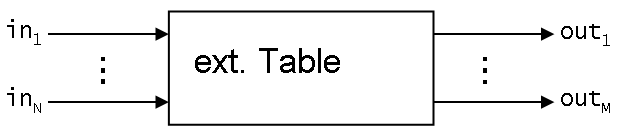
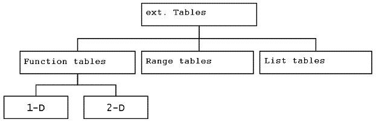

|
|
|


外部表格
KISSsoft 使用外部表（也称为查找表）来处理更大的数据量。这些外部表的一个或多个输出值被分配给一个或多个输入值（参见图 9.2）。

图 9.2: 外部表功能原理
分配给输入数据的输出数据包含在表格中。
外部表格存储在 // 中。如果在数据库中输入了新的表格名称，则还必须手动创建同名且文件扩展名为 的文件。
由于表位于外部，KISSsoft 仅能在程序执行时确定它们的数量。用户可直接从中受益，因为他们可以像 KISSsoft 提供的文件一样，自行生成包含数据表的文件。这些表是可读的 ASCII 文件，因此可以由用户进行编辑和扩展。例如，可以使用内部标准作为 ISO 基本公差的替代方案。
图（参见图 9.3）显示了 KISSsoft 使用的三种表格类型：

图 9.3: 外部表类型
无论类型如何，表始终具有以下结构：
使用 命令将文件标记为外部表格。对于 参数，您必须使用以下指定之一：
|
| 函数表 |
|
| 范围表 |
|
| 列表表 |
注意
您可以用 、 或空格来标记表格中的空白。请注意，如果空格后跟有更多值，则不能使用空格字符。KISSsoft 将空格解释为值分隔符。
表格标题和正文数据的结构取决于类型，以下各节将通过示例应用进行说明。
External tables
KISSsoft uses external tables, also called look-up tables, to handle larger data volumes. One or more output values from these external tables are assigned to one or more input values (see Figure 9.2).
Figure 9.2: Principle of functionality of external tables
The output data that is assigned to the input data are contained in the table.
The external tables are stored in the //. If a new table name is entered in a database, a file with the same name and the file extension must also be created manually.
Because tables are located externally, KISSsoft can only determine how many of them there are during program execution. The user directly benefits from the fact that they can generate their own files with data tables, in a similar way to the files supplied by KISSsoft. The tables are readable ASCII files and can therefore be edited and expanded by the user. It would, for example, be possible to use an internal standard as an alternative to the ISO base tolerances.
Figure (see Figure 9.3) shows the three table types used by KISSsoft in one diagram:
Figure 9.3: Types of external tables
A table always has the following structure, no matter what type it is:
Use the command to mark the external table as an external table. You must use one of the following designations for the argument:
|
| Functions tables |
|
| Range tables |
|
| List tables |
Note
You can mark blanks in tables with , or blank spaces. Note here that no space characters can be used if they are followed by more values. KISSsoft interprets blank space as value separators.
The structure of the table header and the body data, which is dependent on the type, is described with example applications in the following sections.